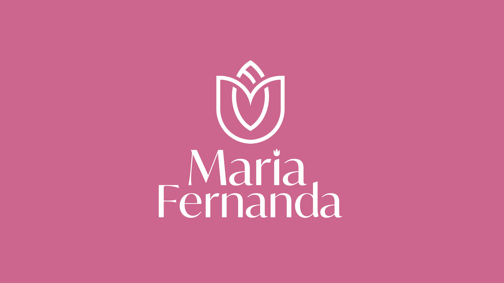
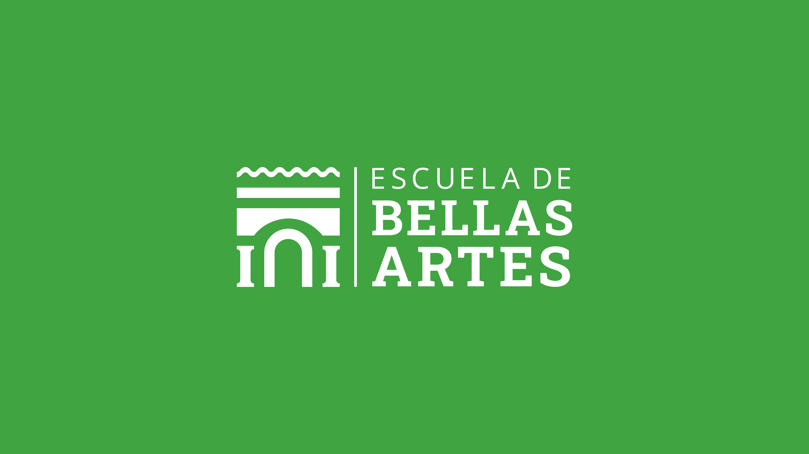

Proyecto 1

Descripción del proyecto
Encargo
María Fernanda solicitó el diseño de la identidad visual para su emprendimiento de sandalias femeninas.
Resultado: Se desarrolló un imagotipo que reflejara la esencia de su empresa dirijido a mujeres principalmente.
Proyecto 2
Descripción del proyecto
Encargo
El propietario de la marca Luz Accesorios solicitó el diseño de una identidad visual.
Resultado: Se desarrolló un imagotipo alusiva a su madre llamada "Luz" (utilicé como base una estrella) acompañado de un símbolo gráfico.
Proyecto 3

Descripción del proyecto
Encargo
Se solicitó el diseño de la identidad visual para la Escuela de Bellas Artes, tomando como referencia su enfoque formativo en el ámbito artístico y académico.
Resultado:
Se desarrolló un imagotipo basado en la estructura de la entrada principal de la institución de "Bellas Artes", representando el acceso a la formación artística y generando una identidad visual sólida y coherente.